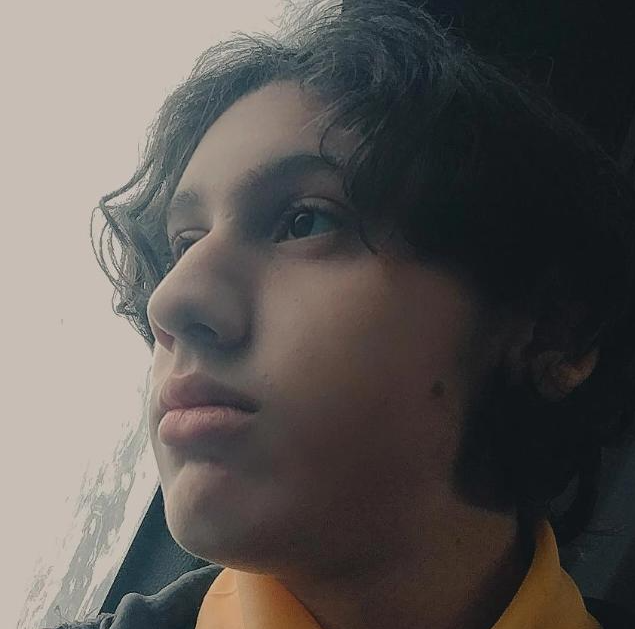
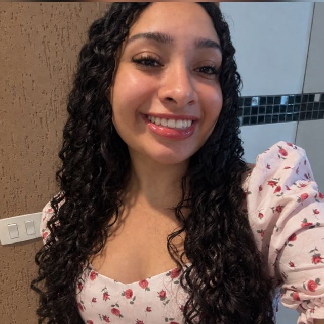
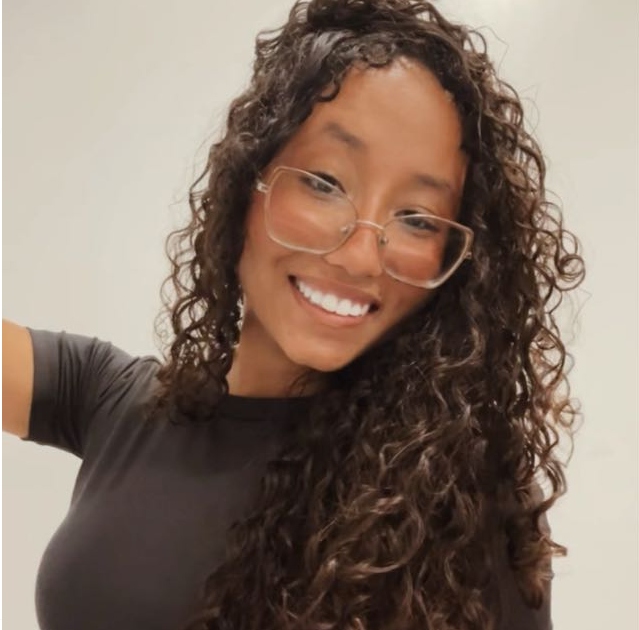
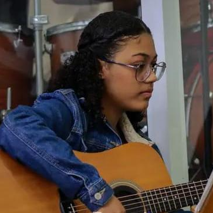
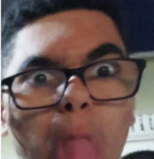

Creator 01 · Desenvolvimento
Dominic
Desenvolvimento & IA
Foco em arquitetura de software, integração de serviços de IA e backend do site Luna.
Creators
Cinco criadores unidos por tecnologia, design e propósito. Conheça quem está por trás do protótipo e da visão do projeto.

Creator 01 · Desenvolvimento
Desenvolvimento & IA
Foco em arquitetura de software, integração de serviços de IA e backend do site Luna.

Creator 02 · Design
Design & Experiência do Usuário
Responsável pela identidade visual, interface e usabilidade do projeto Luna.

Creator 03 · Conteúdo
Conteúdo & Comunicação
Criação de textos, documentação e estratégia de comunicação do projeto.

Creator 04 · Pesquisa
Pesquisa & Estratégia
Levanta requisitos, valida direcionamentos e apoia a estratégia de produto.

Creator 05 · Prototipagem
Prototipagem & Hardware
Constrói o protótipo físico da Luna, integra sensores e cuida da parte eletrônica.
Adicione perfis externos somente com links fornecidos e verificados pelos creators.